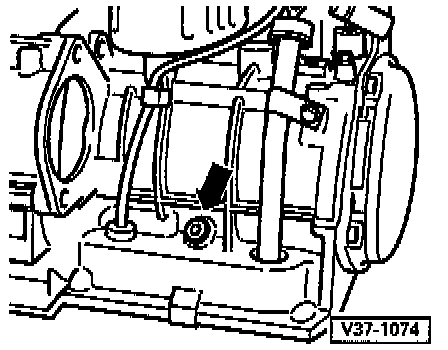
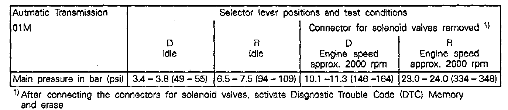

Measuring Main Pressure
MEASURING MAIN PRESSURE, 01M TRANSMISSIONNOTE: Before measuring the main pressure activate the Diagnostic Trouble Code (DTC) Memory and eliminate possible electrical malfunctions.
Connector For Pressure Gauge (Arrow):

- Remove bolt for main pressure tap
NOTE: Always replace bolt for main pressure tap.
- Connect pressure tool VAG 1702 or equivalent and tighten knurled screw.
- Vent pressure tool line VAG 1702 by - loosening the knurled screw with engine running.
NOTE: Re-tighten knurled screw after ventilation.
- Bring ATF temperature to 60°C (140°F)
Measure by connecting VAG 1551 Scan Tool and reading measuring value block
- Refer to the following table while checking pressure.
Minimum Pressure Specified value in bar (psi) gauge pressure
Minimum Transmission Pressure:

- If possible, conduct the main pressure check on a chassis dynamometer (rolling road).
- If deviations to the specified values are observed the following troubleshooting steps
Possible Causes: Idle rpm too high
Remedy: Adjust engine
Possible Causes: ATF pump faulty
Remedy: Check ATF pump and replace if necessary
Possible Causes: Valve stuck in valve body
Remedy: Replace valve body